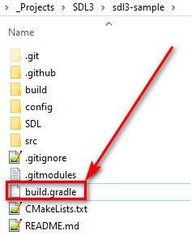
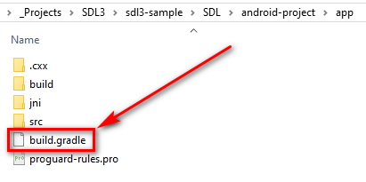
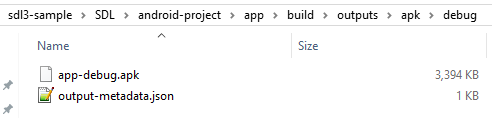

How to run SDL3 app on Android
I will show how to run the sdl3-sample example on Web with WebAssembly. You should have Gradle installed. You can download Binary-only Try to check if Gradle is in the Path. So type in CMD: gradle -v I have Gradle 8.1.1
1. Download and install Android SDK, NDK, JDK
2. Download and run SDL3 example
- Run CMD in a project folder where you want to download the example
- Copy and execute the following command to download the example: git clone https://github.com/Ravbug/sdl3-sample --depth=1 --recurse-submodules
- The source code of the example is here: 'sdl3-sample\src\main.cpp' It just shows a background color
- Copy the 'build.gradle' that is located in the root of the 'sdl3-sample' folder:

- Open the 'sdl3-sample\SDL\android-project\app' folder and delete 'build.gradle' here:

- Paste here the 'build.gradle' that you have copied before (from the root of the 'sdl3-sample' folder)
- Go to the 'sdl3-sample\SDL\android-project' folder and run CMD here. Execute the following command: gradlew assembleDebug It will create APK-file here: 'sdl3-sample\SDL\android-project\app\build\outputs\apk\debug':

3. Activate a developer mode on your device to debug with USB-cable
Now you can run your application on your device by executing the gradlew installDebug inside of the 'sdl3-sample\SDL\android-project' folder